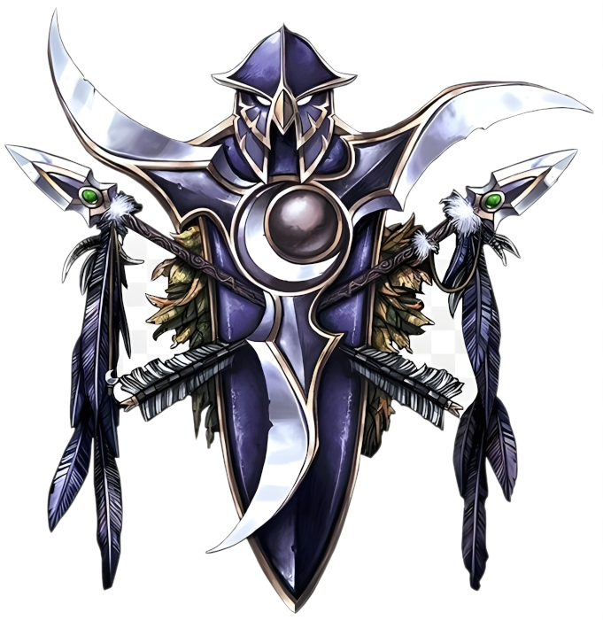

Ночные Эльфы
Описание
Каль'дорай древний и затворческий народ рождённый на заре этого мира. Древнее наследие превратило их в воинственный народ почитающий природу и анимистические практики. Как правило Каль'дорай практичны, но в то же время суеверны, от чего часто склонны к парадоксам. Представители народа одержимы глубокой духовной страстью и желанием найти утешение. В древности Каль'дорай были бессмертны, но эта могущественная магия была упущена Кель'дорай. Безрассудное использование магической силы позволило Пылающему Легиону вторгнуться в этот мир что привело к катострофической битве ныне известной как Раскол. Та битва изменила лик Азерот навсегда, и привела к созданию континентов, дрейфующих по поверхности планеты от огромного скопления энергии в центре океана, известного как Водоворот. Ночные эльфы честны до неприличия, справделивы как никто другой, и сострадательны к другим народам как заботливые родители. Однако они не доверяют большенству младших народов, так как видят в них глупых, недолговечныз существ, чьи ошибки забываются ими самими, но не Каль'дорай. Множество Ночных эльфов выбрали своим долгом стараться сохранять природный баланс на планете. Из-за высокомерного поведения и способностей Ночных эльфов к теневой магии младшие народы тоже предпочитают им не доверять.
Внешность
Ночные эльфы обладают внушительным телосложением, их средний рост достигает двух и более метров. Мужчины очень мускулисты, бладают широкой грудью и плечами, тем самым подчёркивая невероятную силу, заложенную не только в их разуме, но и физическом теле. Женщины гибкие и округлые, но тоже мускулистые и сильные. У представителей обоих полов имеются длинные брови, выходящие за пределы лица, и длинные, островатые уши. Тон кожи варьируется от бледно-белого до синего или тёмно-красного, а волосы могут иметь цвет как ярко белый, так и практически чёрный, или природный оттенок листвы зелёного, жёлтого, оранжевого, или красного цвета.
Регион
Ночные эльфы обитают на островном континенте Тельдрассил, где находится их столица Дарнасс с массивными храмами и богатыми торговыми кварталами. Этот город одно из последних убежищ Каль'дорай, их союзников дриад и хранителей рощи. Однако "Корона земли" не лишена проблем. Фурболги, ведомые таинственной силой, ежедневно совершают вылазки к границам города. Кровожадные гарпии и дьявольские сатиры преследуют одиноких путников, и пытаются развратить их первоначальную суть. Большинство неопытных Каль'дорай оттачивают свои боевые навыки противостоя этим угрозам. Хотя Ночные эльфы и доверяют своим союзникам из Альянса, не многие люди или гномы видели Тальдрассил своими глазами. И только лишь некоторым удалось лицезреть священные Лунные колодцы. Высшим эльфам не разрешается посещать земли Кель'дорай - если они будут обнаружены в землях Ночных эльфов, высокомерных Каль'дорай будет ждать быстрый и жестокий конец.
Принадлежность
Альянс. Ночные эльфы союзники Альянса, но не самые доверенные и уважаемые. Такое отношение они заслужили своим недоверием к младшим народам. В сочетании с мистической внешностью и таинственной природой Кель'дорай, их взаимодействие с другими расами порой становится проблематичным.
Тем не менее, лидеры Ночных эльфов видят прок от союза с более молодыми народами - те всё чаще демонстрируют свой потенциал. Из-за этого Каль'дорай выступают в качестве наблюдателей, что готовы в любой момент вмешаться и исправить потенциально опасные ошибки. К тому же, другие расы помогают Ночным эльфам проявлять азарт, и с каждым новым поколением всё больше Каль'дорай начинают путешествовать в экзотические места.
Союз с людьми и дварфами укрепляется ещё и ненавистью Каль'дорай к оркам. После смерти Кенария во время Третьей войны многие стражи, друиды, и воины Ночных эльфов начали большую охоту на орков ради отмщения за смерть своего прежнего лидера.
Вера
Ночные эльфа поклоняются Древним - божествам природы, покровительствующим лесам и охоте. Элуна - богиня луны, и Малорн - дозорный, являются наиболее почитаемыми фигурами. Кроме богов природы эльфы почитают детей Кенария так же, как почитали его самого. И возможно благодаря такому почитанию дети полубога однажды окрепнут и помогут Ночным эльфам отплатить оркам за прегрешения в прошлом
Имена
Имена Ночных эльфов всегда несут в себе значение. Имена часто образуются от эльфийских слов или имён знаменитых героев и таким образом создают крепкую тотемную связь со своими предками. Фамилии же указывают на родословную и часто насчитывают тысячелетия.
Мужские имена
- Илтилеор
- Мелитарн
- Хардон
- Андиссиэль
- Мердант
- Танавар
Женские имена
- Кейна
- Деланта
- Меридия
- Фрейя
- Аланнария
- Невариаль
Фамилии
- Лезвие луны
- Шторм глеф
- Гордый странник
- Дубоход
- Ночное крыло
- Олений рог
